Hi all,
A happy new year! I hope 2025 brings you many great things.
The turning of the year is always a great time to reflect on the year previous and plan for the year ahead.
You may have seen at the end of last year a "Tableau Wrapped" doing the circuits in the data community built by Hari Jeyan. I was so impressed, and it's had an incredible amount of praise from those looking to get some juicy numbers about their portfolio. Today, I had the chance to sit down with Hari to talk through how he went about creating Tableau Wrapped, the spin off of the popular spotify wrapped from years back.
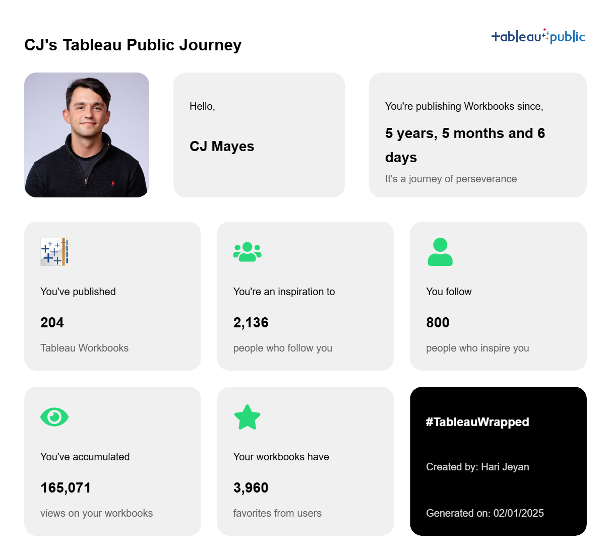
CHECK OUT THE VIDEO FROM HARI
[videopress aIfj5osq w="0" loop="true"]
HOW DID I GET INTO DATA?Thank you, CJ, for encouraging me to share the story and lessons from a simple Tableau Wrapped web app I built recently. You can check it out here: Tableau Wrapped.I’m Hari Jeyan, from the beautiful country of Sri Lanka, and I’ve been using Tableau since early 2022. Although I hold a Bachelor’s degree in Information Technology, which involved extensive coding, I realized during my internship in 2020 as a front-end developer that my true interests lay elsewhere.Three weeks into my software engineering internship, I transitioned to a Business Analyst role, as I felt more drawn to the business side of the company rather than coding. This shift sparked my curiosity about finding a career that combined my technical skills with business decision-making.Eventually, I discovered my passion for working at the intersection of business and data, where I could use technology to drive data-informed decisions. Towards the end of my degree, I took courses on Coursera and started experimenting with basic Tableau Public projects. However, apart from these initial projects and my professional work, I wasn’t actively engaging with the Tableau community or consistently building data analytics projects to showcase my skills.THE PROJECT IDEAAlthough I only started using Spotify in 2024, I was amused by their Spotify Wrapped feature since they started. It was incredible to see how this simple yet personalized concept became a powerful marketing catalyst, inspiring similar initiatives across various tools and platforms.It was the evening of December 20th, a Friday, and my social media feed was flooded with Spotify Wrapped, LinkedIn Wrapped, and other year-end summaries. This end-less posts of Wrapped features sparked a series of questions in my mind:
Why haven’t data professionals shared anything Wrapped-related for their portfolios?
Does Tableau have a Wrapped feature?
Why doesn’t Tableau offer something like this for its vast community?
What would it take to build a Tableau Wrapped?
Can I do it?
Will my perfectionist mindset drag this project out forever?
Should I build this in public?
What if I fail?
With just ten days left until the New Year, I was in between the excitement of starting this project and the fear of not finishing it in time. Ultimately, I decided to move forward for one reason: I believed this could make a difference for the Tableau datafam community.All I needed to do was create something that people would love to use.RESOURCESIt had been more than four years since I last wrote code to build something, aside from data wrangling. I initially saw this as a major roadblock. However, I realized that the Tableau Public API, which is well-documented by Will Sutton (https://github.com/wjsutton/tableau_public_api), was readily available. This meant I could focus on making API requests and using the responses without having to start from scratch like building a web scraper.
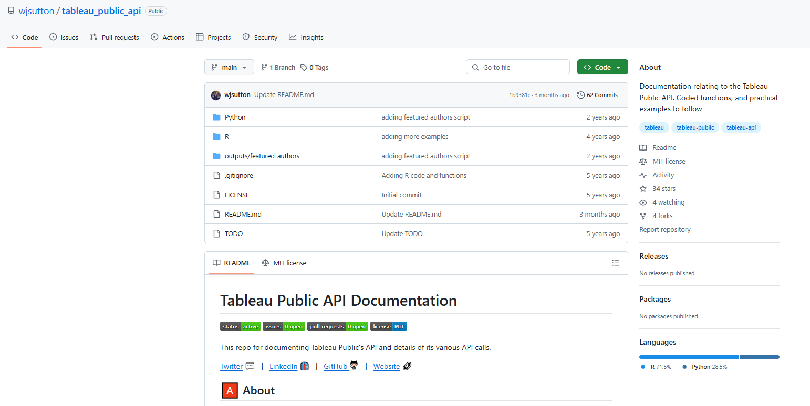
A few weeks before, I watched a YouTube video titled "How to Build Side Projects with AI?"by Harish Uthayakumaran and his team. They explained how they built a GMAT practice web app in just a few days using AI tools. It was a lightbulb moment for me. Their experience showed that building products today is never like before. AI tools make the process faster and more accessible. Inspired by this, I wanted to dive into building something myself, but at that point, I wasn’t sure what to create.With this new perspective, I felt less concerned about the coding aspect of the project. Instead, I shifted my focus to figuring out the UI, deciding on meaningful metrics, and addressing other key elements needed to bring my idea to life.TABLEAU PUBLIC APIThe success of this entire project is dependent on one crucial component: the Tableau Public API. This API provides access to data about user profiles and workbooks that are publicly shared on the Tableau Public platform, making it the backbone of the project.API call format: https://public.tableau.com/profile/api/ + Tableau Public Username
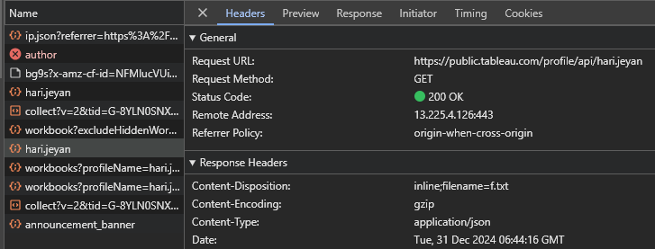
Profile API Response:
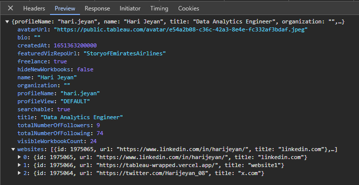
The following are the API objects returned in the response. Here we can find some of the useful data that can be used in the wrapped.
avatarUrl: The URL of the user's profile picture/avatar.
bio: The biography or description of the user.
createdAt: The account creation timestamp in milliseconds since the Unix epoch.
featuredVizRepoUrl: The URL or identifier for the user's featured visualization repository.
freelance: A boolean indicating whether the user is available for freelance work.
hideNewWorkbooks: A boolean indicating whether new workbooks are hidden from the user's profile.
name: The full name of the user.
organization: The organization the user is associated with.
profileName: The user's profile name or username.
profileView: The view setting for the profile (e.g., "DEFAULT").
searchable: A boolean indicating whether the profile is searchable.
title: The professional title or designation of the user.
totalNumberOfFollowers: The total number of followers the user has.
totalNumberOfFollowing: The total number of other profiles the user is following.
visibleWorkbookCount: The number of workbooks visible on the user's profile.
Tableau Public API URL for Workbooks
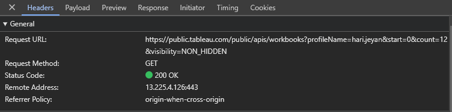
API call format for first 50 workbooks: https://public.tableau.com/public/apis/workbooks?profileName= + Tableau Public Username + &start=0&count=50&visibility=NON_HIDDENThe key is to utilize the start and count parameters effectively, incrementing them by 50 with each request, as the API retrieves workbook details in batches of 50!
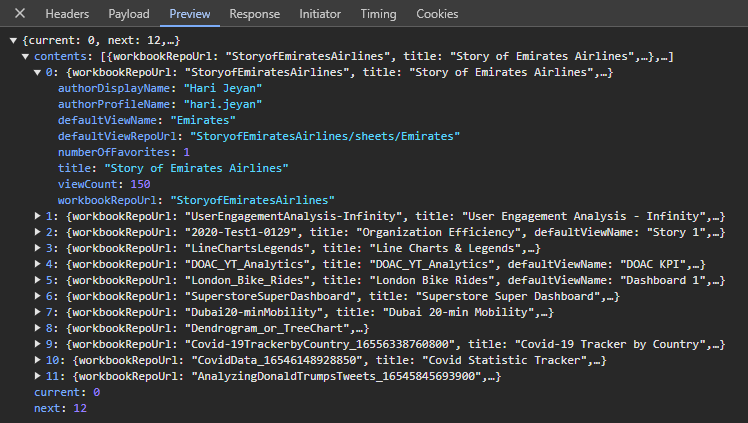
Here also we can see some of the useful data that are specific to individual dashboards.
authorDisplayName: The display name of the workbook's author.
authorProfileName: The profile name (or username) of the workbook's author.
defaultViewName: The name of the default view within the workbook.
defaultViewRepoUrl: The repository URL of the default view within the workbook.
numberOfFavorites: The number of times the workbook has been marked as a favorite by users.
title: The title of the workbook.
viewCount: The number of times the workbook has been viewed.
workbookRepoUrl: The repository URL of the workbook.INITIAL PLANMy initial plan was to use Streamlit—a tool for building and deploying data apps—to fetch responses from the Tableau Public API and display them in a simple interface. For example the below looking at Prasann's journey.
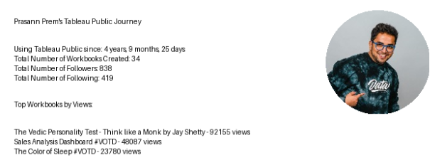
The first iteration of the Streamlit app gave me a starting point to think about the UI and how I wanted to structure the final output. One of my primary goals was to enable users to download and proudly share their achievements on social media.However, after a little bit of researching and exploring, I found that building a simple web app using a React framework will be a better option for the project considering the long term implementations I had in mind.UI DESIGNWhile exploring the Figma Community designs, I came across a BentoCV design by Karthik. To save time and jump into development quickly, I decided to customize this CV design into a Wrapped design. I then spent the next 2–3 hours fine-tuning it to match my vision.
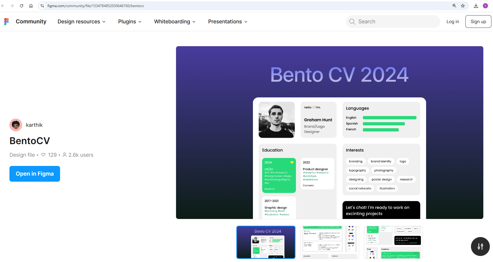
Throughout the process, my primary focus was simple: to create something I’d personally be excited to use. If I wouldn’t want to use it, I couldn’t expect others to either.
The final UI design looked something like this
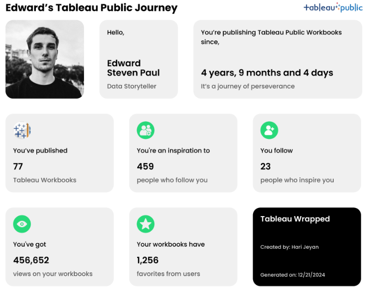
CODING WITH CURSORThis was my first time using Cursor AI, and I’m thrilled with how well it worked. From deciding the tech stack, installing the necessary programming languages, and setting up the environment to organizing the project structure and coding, Cursor AI proved to be incredibly intuitive. It streamlined the entire process, allowing me to implement code through simple clicks. The key was crafting clear, detailed prompts that explained exactly what I intended to achieve.Here’s the first prompt I used in Cursor AI:Prompt:"I'm building a Tableau Wrapped web app, which:
Takes a Tableau Public username as input.
Uses the Tableau Public API to fetch user statistics, including:
Profile info
Total workbooks
Followers/Following counts
Total views
Join date
Displays results in a Bento grid card UI (design already created in Figma).
Allows downloading results as an image for social media sharing.
I have 0 coding experience, so I need step-by-step guidance to implement this project.API Documentation is available, and we have access to endpoints such as:
Using this prompt, Cursor AI guided me through the coding process seamlessly, making it possible to build a functional and visually appealing web app.
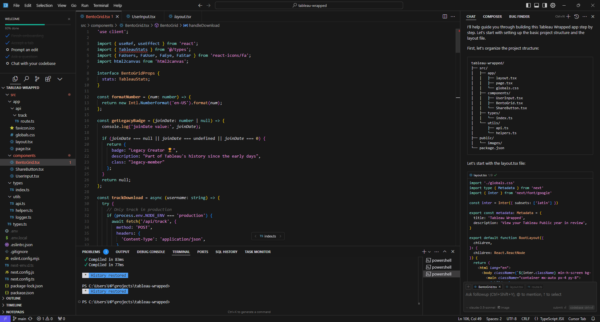
Once I provided Cursor AI with the context of the project and set up the necessary components, the process became much smoother. All I needed to do was download the Bento UI as a PNG image from Figma, upload it to the Cursor AI chat, and instruct it to build the frontend UI.Of course, not everything worked perfectly on the first try. There were moments when the output didn’t meet my expectations. In those cases, I simply refined my prompts, providing more detailed context and clearer instructions. The key was persistence—continually pushing Cursor AI to understand my requirements better.BUG FIXESThis was the one area where I faced some challenges. If you have a little bit of experience in coding and debugging, it will be easy for you to debug as you would know what to look for. When fixing bugs, it’s essential to provide clear context about the issue and add the specific code file to the Cursor AI chat. This approach not only saves time but also prevents unintended changes to the working parts of the code. FINALISING THE PROJECTI have nearly checked 100+ times with various user names, fixed small things to make it look better in each iteration, and made it mobile responsive, as I expected more people would access this from their mobile phones. It felt like reinventing myself after some time. Doing things for the first time and getting it done perfectly before the party is over was the best feeling I had in a while. SHARING WITH THE COMMUNITYInitially, my plan was just to make a simple LinkedIn post and share the link in the post. I thought there was nothing much to say about it as it is a simple web app that gives the Tableau Public Wrapped when a user enters their Tableau Public user name, which can be found in their profile URL. But when I shared my plan with my wife, who is a Machine Learning Engineer and not a Tableau user, she suggested that it would be better to make a short video on how to use this web app and what it does without writing any lengthy post and people would stop scrolling and check what this is about. But I was scratching my head and thinking, what’s the point of doing all this? The only thing I didn’t understand was the perspective. Just because I spent two full days building this and know the ins and outs of the product and how it works, for someone who’s seeing this for the first time may not see this product in the same way as I see it. To overcome this challenge a short explainer video would be the best thing. I recorded my screen, found a promo video template in Canva, and quickly edited the Tableau Promo video, which went well beyond my expectations. I shared this on a Sunday evening. The responses I received were overwhelming, and I was so glad to see people try this app and share their Tableau Public Wrapped with the pride of their Tableau journey.
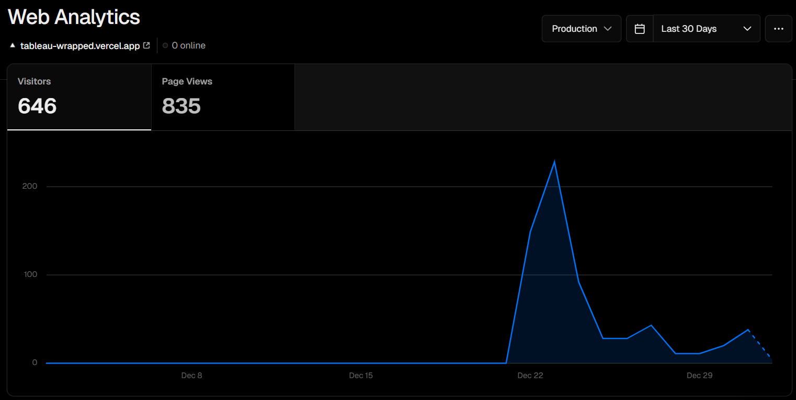
REFLECTIONSIf you’d asked me two years ago whether I could have accomplished this project, my answer would likely have been a “no.” Even if I had the idea back then, I wouldn’t have been willing to relearn coding or dedicate weeks to building something like this. It would’ve taken weeks, and the party would’ve been over. However, with the arrival of Generative AI, the landscape has changed. What once seemed impossible is now just challenging—something achievable with commitment and the right tools. Gen AI has lowered the barriers to entry, making ideas that once seemed out of reach more attainable.NETWORKINGBefore this project, I followed many top 1% contributors in the Tableau datafam, but I wasn’t directly connected to most of them. After sharing my project, things changed. I received DMs, gained followers, had my post shared and tagged by others, and built meaningful connections. This blog also happened because of that. This experience made me realize the truth in Naval Ravikant’s words:"Networking is overrated… Do something great, and your network will instantly emerge."FUTURE PLANSThere are a few improvements I’m planning to add to this Tableau Wrapped app with time.
Currently, the downloaded Tableau Wrapped image on desktop and mobile looks different based on responsiveness. Make the downloaded image look the same across all devices.
The individual dashboards have created dates and last updated dates. Using this, make a dashboard that visualizes annual user engagement trends in Tableau Public.
Enable the user to set annual, quarterly, or monthly goals for Tableau Public and measure the streak in GitHub style.
I hope this was worth the read. Along with the project's technical details, I wanted to inspire people that they could do things with the help of AI that seemed impossible two years ago.
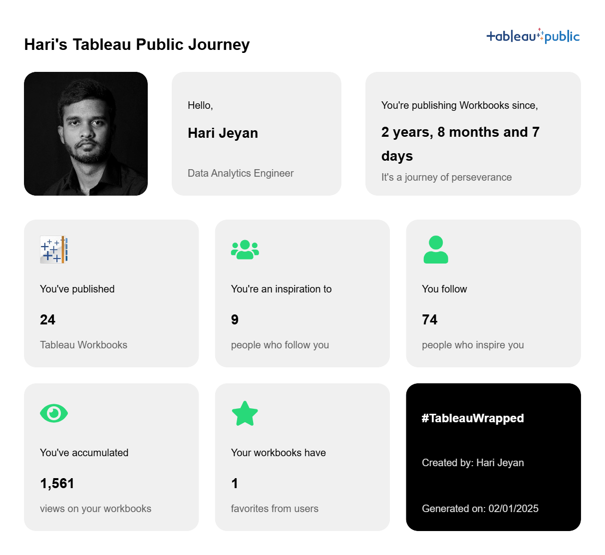
XLinkedInTableau PublicGitHubCJ Round Up: Thank you so much for sharing Hari the inner workings of what you have created! I love that it shares everything from design, to BI tools, to code, and suggestions along that journey.
LOGGING OFF,
CJ
 It felt like reinventing myself after some time. Doing things for the first time and getting it done perfectly before the party is over was the best feeling I had in a while.
SHARING WITH THE COMMUNITY
Initially, my plan was just to make a simple LinkedIn post and share the link in the post. I thought there was nothing much to say about it as it is a simple web app that gives the Tableau Public Wrapped when a user enters their Tableau Public user name, which can be found in their profile URL.
But when I shared my plan with my wife, who is a Machine Learning Engineer and not a Tableau user, she suggested that it would be better to make a short video on how to use this web app and what it does without writing any lengthy post and people would stop scrolling and check what this is about. But I was scratching my head and thinking, what’s the point of doing all this? The only thing I didn’t understand was the perspective. Just because I spent two full days building this and know the ins and outs of the product and how it works, for someone who’s seeing this for the first time may not see this product in the same way as I see it. To overcome this challenge a short explainer video would be the best thing.
I recorded my screen, found a promo video template in Canva, and quickly edited the Tableau Promo video, which went well beyond my expectations. I shared this on a Sunday evening. The responses I received were overwhelming, and I was so glad to see people try this app and share their Tableau Public Wrapped with the pride of their Tableau journey.
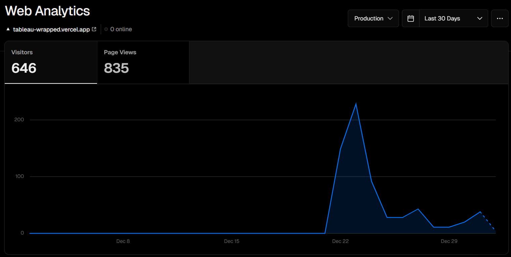
REFLECTIONS
If you’d asked me two years ago whether I could have accomplished this project, my answer would likely have been a “no.” Even if I had the idea back then, I wouldn’t have been willing to relearn coding or dedicate weeks to building something like this. It would’ve taken weeks, and the party would’ve been over.
However, with the arrival of Generative AI, the landscape has changed. What once seemed impossible is now just challenging—something achievable with commitment and the right tools. Gen AI has lowered the barriers to entry, making ideas that once seemed out of reach more attainable.
NETWORKING
Before this project, I followed many top 1% contributors in the Tableau datafam, but I wasn’t directly connected to most of them. After sharing my project, things changed. I received DMs, gained followers, had my post shared and tagged by others, and built meaningful connections. This blog also happened because of that.
This experience made me realize the truth in Naval Ravikant’s words:
"Networking is overrated… Do something great, and your network will instantly emerge."
FUTURE PLANS
There are a few improvements I’m planning to add to this Tableau Wrapped app with time.
It felt like reinventing myself after some time. Doing things for the first time and getting it done perfectly before the party is over was the best feeling I had in a while.
SHARING WITH THE COMMUNITY
Initially, my plan was just to make a simple LinkedIn post and share the link in the post. I thought there was nothing much to say about it as it is a simple web app that gives the Tableau Public Wrapped when a user enters their Tableau Public user name, which can be found in their profile URL.
But when I shared my plan with my wife, who is a Machine Learning Engineer and not a Tableau user, she suggested that it would be better to make a short video on how to use this web app and what it does without writing any lengthy post and people would stop scrolling and check what this is about. But I was scratching my head and thinking, what’s the point of doing all this? The only thing I didn’t understand was the perspective. Just because I spent two full days building this and know the ins and outs of the product and how it works, for someone who’s seeing this for the first time may not see this product in the same way as I see it. To overcome this challenge a short explainer video would be the best thing.
I recorded my screen, found a promo video template in Canva, and quickly edited the Tableau Promo video, which went well beyond my expectations. I shared this on a Sunday evening. The responses I received were overwhelming, and I was so glad to see people try this app and share their Tableau Public Wrapped with the pride of their Tableau journey.
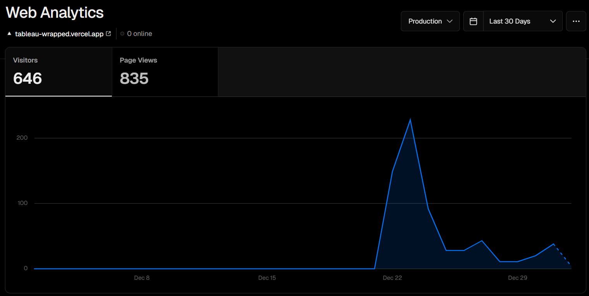
REFLECTIONS
If you’d asked me two years ago whether I could have accomplished this project, my answer would likely have been a “no.” Even if I had the idea back then, I wouldn’t have been willing to relearn coding or dedicate weeks to building something like this. It would’ve taken weeks, and the party would’ve been over.
However, with the arrival of Generative AI, the landscape has changed. What once seemed impossible is now just challenging—something achievable with commitment and the right tools. Gen AI has lowered the barriers to entry, making ideas that once seemed out of reach more attainable.
NETWORKING
Before this project, I followed many top 1% contributors in the Tableau datafam, but I wasn’t directly connected to most of them. After sharing my project, things changed. I received DMs, gained followers, had my post shared and tagged by others, and built meaningful connections. This blog also happened because of that.
This experience made me realize the truth in Naval Ravikant’s words:
"Networking is overrated… Do something great, and your network will instantly emerge."
FUTURE PLANS
There are a few improvements I’m planning to add to this Tableau Wrapped app with time.